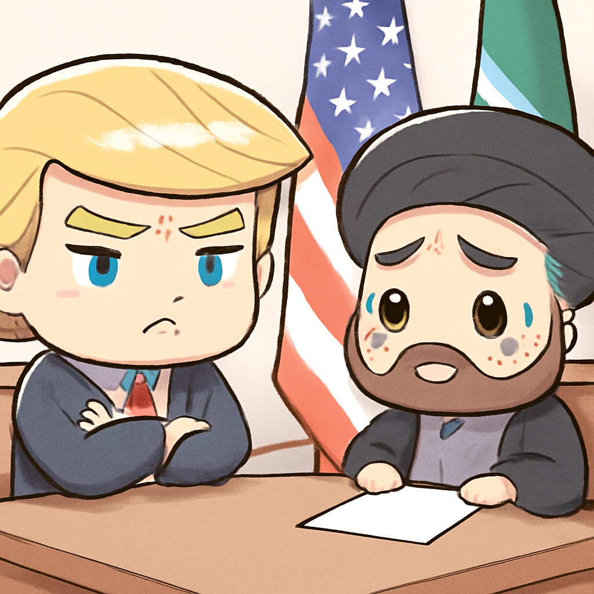
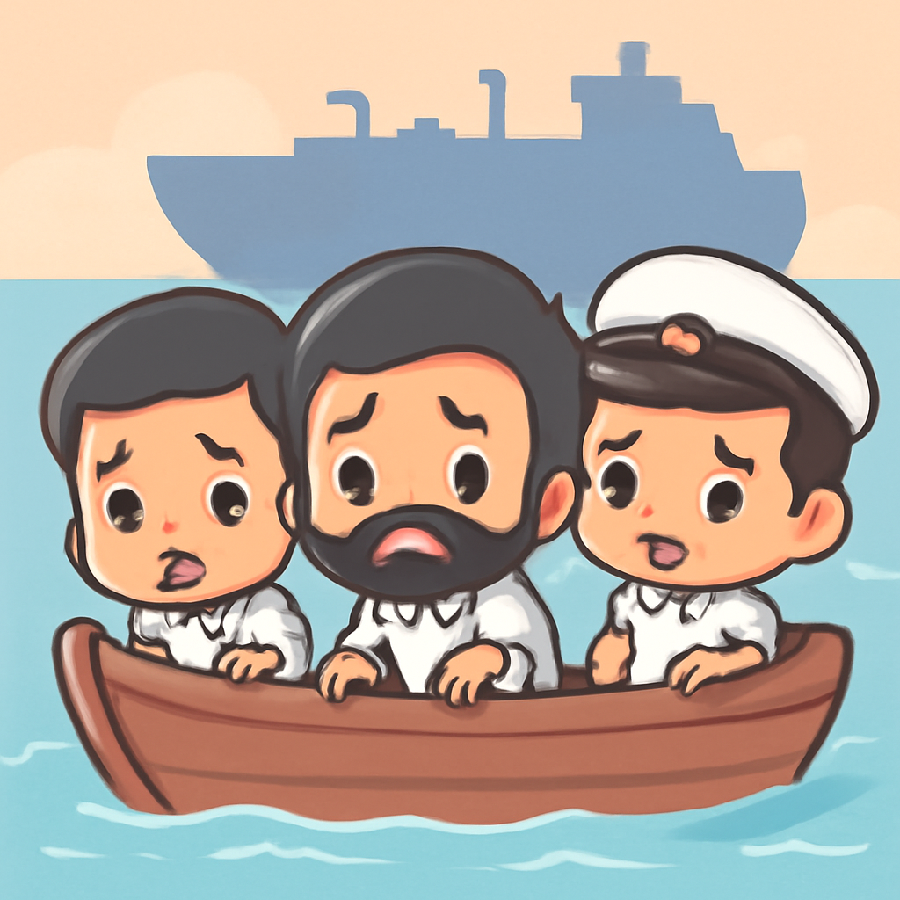
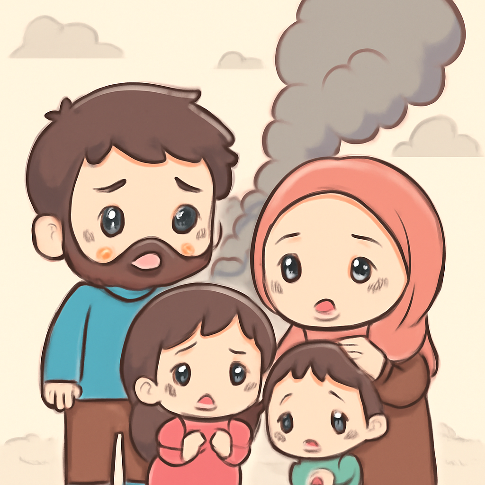
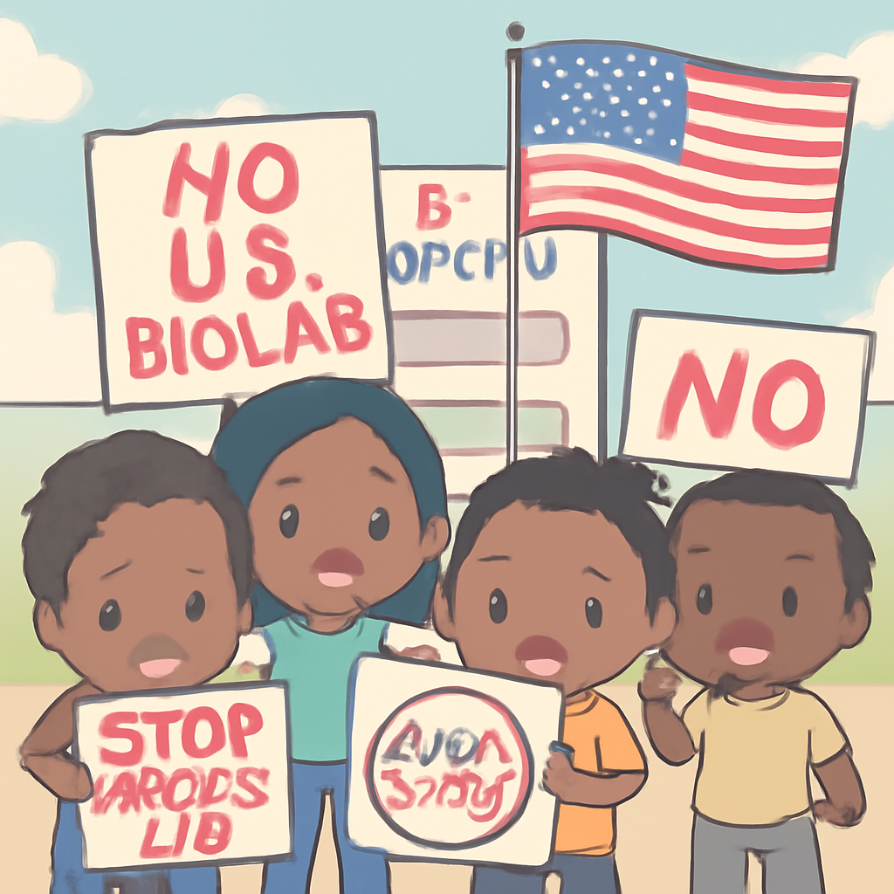
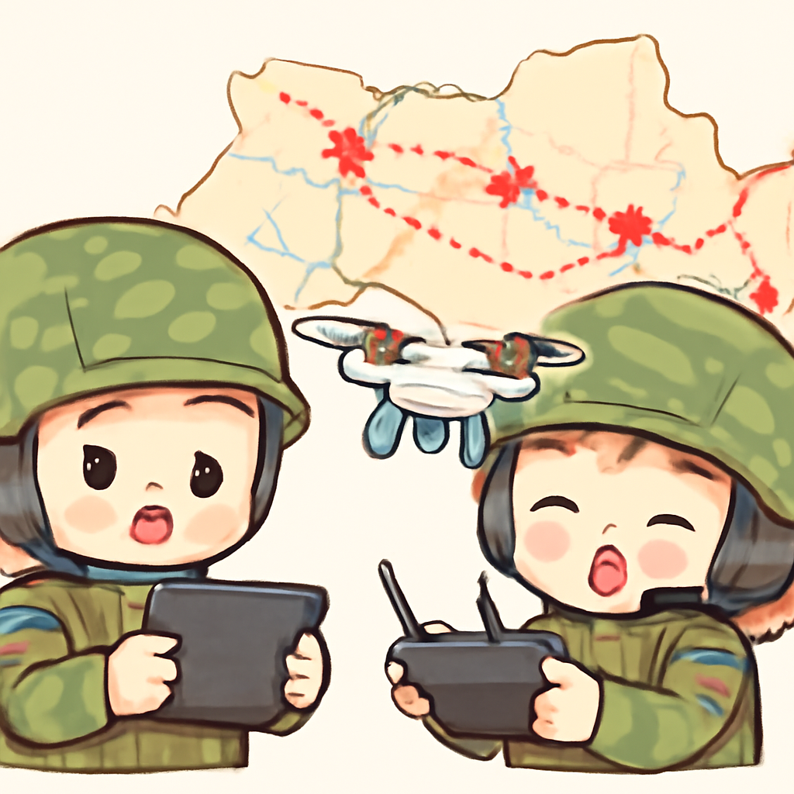

其一 · 美國華府 · 特朗普對伊朗發出警告
美國總統特朗普警告伊朗，威脅將再次打擊。

在美國華府，特朗普總統表示，伊朗必須為拖延協議而付出代價，並且警告說會對其進行嚴厲打擊。這番話再次升高了美伊之間的緊張局勢，可能影響到整個中東地區的穩定。看來，特朗普的外交策略就像網路上的熱門影片，總是讓人期待下一步！
🔗 原始新聞 ↗
2026-06-11 · 以古觀今，以笑抗愁
美國總統特朗普警告伊朗，威脅將再次打擊。

在美國華府，特朗普總統表示，伊朗必須為拖延協議而付出代價，並且警告說會對其進行嚴厲打擊。這番話再次升高了美伊之間的緊張局勢，可能影響到整個中東地區的穩定。看來，特朗普的外交策略就像網路上的熱門影片，總是讓人期待下一步！
🔗 原始新聞 ↗
美國表示擊中阿曼海域油輪，三名印度船員失踪。

在阿曼海域，美國軍方聲稱擊中了一艘油輪，造成三名印度船員失踪，其他21名船員已獲救。這起事件不僅讓印度政府緊急介入，也引發對海上安全的新關注。海洋真是一個神秘又危險的地方，除了海豚，還有許多意想不到的事情發生。
🔗 原始新聞 ↗
以色列對黎巴嫩南部的空襲造成17人遇難。

在黎巴嫩南部的泰爾·德巴，報導指出以色列的空襲造成17人喪生，這是該地區近期衝突的最新升級。隨著局勢的惡化，當地居民的生活再次受到威脅，讓人不禁擔心和平何時能真正到來。在這樣的局勢下，真希望有個超級英雄能出現，拯救這片土地！
🔗 原始新聞 ↗
肯尼亞民眾抗議美國設立的埃博拉隔離設施。

在肯尼亞，數百名民眾走上街頭，反對美國設立的專為美國患者準備的埃博拉隔離設施。這引發了政府與民眾之間的緊張關係，也讓人質疑這項決策的公平性。難道真的只有美國的病人才能享受這樣的待遇？似乎每個國家都需要為自己的「病人」設想一下！
🔗 原始新聞 ↗
烏克蘭的無人機攻擊正在削弱俄軍的供應線。

在烏克蘭，新的無人機攻擊對俄軍造成了相當大的影響，尤其是在供應鏈方面。這些攻擊不僅增加了燃料短缺，還讓俄軍的部隊調動變得更加困難。看來，烏克蘭的武器庫裡不只有傳統武器，還有創新科技的無人機！
🔗 原始新聞 ↗